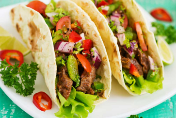

Tacos

Description
A Taco is a Mexican food consisting of a tortilla filled with various ingredients, like beans, rice, chopped meat, cheese, and tomatoes, folded over in half or rolled into a loose cylinder shape
In this case, we'll be making a delicious beef taco!
Steps:
Step 1
Preheat oven to 375 degrees F(190 degrees C).
Step 2
Warm taco shells for 5 minutes on the center rack in the preheated oven
Step 3
In a medium skillet over medium high heat, brown the beef. Halfway through browning, pur in ketchup. Stir well and let simmer for 5 minutes.
Step 4
Spoon the meat mixture into the warm taco shells and top with cheddar cheese. Return the filled taco shells to the preheated oven and bake until cheese is melted. Top each taco with a little tomato and lettuce.
Return to main page